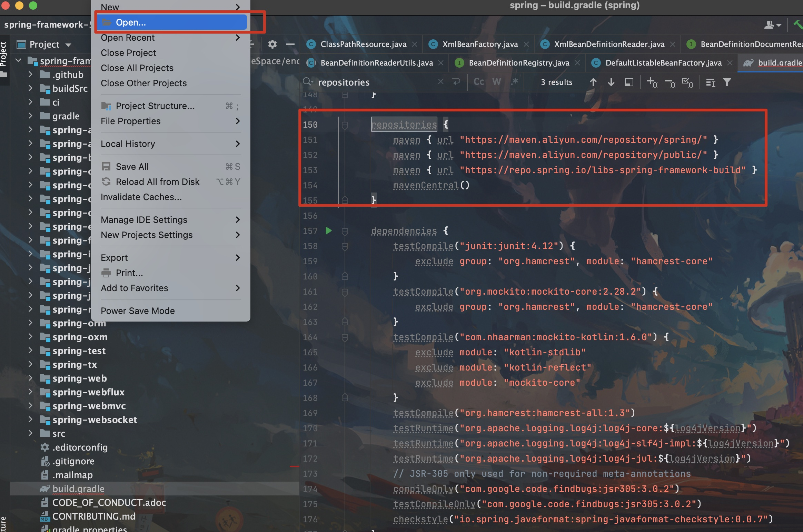

Spring5源码环境搭建
1. 获取源码
1. 下载地址：https://github.com/spring-projects/spring-framework
2. 5.x是用gradle(类似maven)进行搭建的其依赖也是，但是仓库还是应用的maven仓，所以可在build.gradle文件中找到repositories标签(150行左右)加入阿里云的maven镜像仓
// 阿里云仓库
maven { url "https://maven.aliyun.com/repository/spring/" }
maven { url "https://maven.aliyun.com/repository/public/" }
// 默认配置
maven { url "https://repo.spring.io/libs-spring-framework-build" }
mavenCentral()
3. 什么是gradle?
# Gradle是一个基于JVM的构建工具，是一款通用灵活的构建工具，支持maven， Ivy仓库，支持传递性依赖管理，而不需要远程仓库或者是pom.xml和ivy.xml配置文件，基于Groovy，build脚本使用Groovy编写
2. IDEA中导入Spring源码

[!TIP] 导入后IDEA会自动下载依赖，等待所有依赖下载完成即可 如没有自动下载，可右击项目build